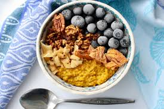

Recipe for Porridge

Description:
Make your own beautiful porridge bowl by following the below recipe!
Ingredients:
- Oats
- Milk or Water
- Anything else you want to add in/on top!
Steps:
- Let your oats simmer in a pot with no milk or water to grill them slightly first.
- After about 5 minutes of regularly mixing them, add milk or water, about the same volume as the oats.
- Set to medium heat and make sure to stir every minute at least. The more the better.
- Once your porridge has the texture you want it to have, pour it into a bowl.
- Add any ingredients you like and voila, you've made a beautiful porridge bowl!
- Ingredients that work well are berries, bananas, peanut butter, nuts, seeds... Get creative!